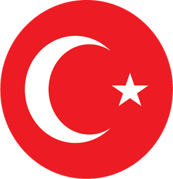

onload
Türkiye veya resmî adıyla Türkiye Cumhuriyeti, topraklarının büyük bölümü Anadolu'da, küçük bir bölümü ise Balkan Yarımadası'nın güneydoğu uzantısı olan Trakya'da yer alan bir ülkedir. Kuzeybatıda Bulgaristan, batıda Yunanistan, kuzeydoğuda Gürcistan, doğuda Ermenistan, İran ve Azerbaycan'ın ekslav toprağı Nahçıvan, güneydoğuda ise Irak ve Suriye ile komşudur. Güneyini Kıbrıs Adası ve Akdeniz, batısını Ege Denizi ve kuzeyini Karadeniz çevreler. Marmara Denizi ise İstanbul Boğazı ve Çanakkale Boğazı ile birlikte Anadolu'yu Trakya'dan, yani Asya'yı Avrupa'dan ayırır. Türkiye, Avrupa ve Asya kıtalarının kavşak noktasında yer alması nedeniyle önemli bir jeostratejik güce sahiptir. Türkiye toprakları üzerindeki ilk yerleşmeler Yontma Taş Devri'nde başlar.Doğu Trakya'da Traklar olmak üzere, Hititler, Frigler, Lidyalılar ve Dor istilası sonucu Yunanistan'dan kaçan Akalar tarafından kurulan İyon medeniyeti gibi çeşitli eski Anadolu medeniyetlerinin ardından, Makedonya kralı Büyük İskender'in egemenliğiyle ve fetihleriyle birlikte Helenistik Dönem başladı. Daha sonra, sırasıyla Roma İmparatorluğu ve Anadolu'nun Hristiyanlaştığı Bizans dönemleri yaşandı.[9][11] Selçuklu Türklerinin 1071 yılında Bizans'a karşı kazandığı Malazgirt Meydan Muharebesi ile Anadolu'daki Bizans üstünlüğü büyük ölçüde kırılarak Anadolu, kısa süre içerisinde Selçuklulara bağlı Türk beyleri tarafından ele geçirildi ve Anadolu toprakları üzerinde İslamlaşma ve Türkleşme faaliyetleri başladı. Kısa sürede Anadolu'daki diğer Türk beyliklerinin üzerinde hakimiyet kuran Konya merkezli Anadolu Selçuklu Sultanlığı, 1243 yılındaki Moğollara karşı kaybedilen Kösedağ Muharebesi'ne kadar Anadolu'yu yönetti. Anadolu'daki Moğol istilalarından sonra zayıf duruma düşen Anadolu Selçuklu Devleti, Anadolu'da yerini yeni Türk beyliklerine bıraktı. 13. yüzyılın sonlarından itibaren Batı Anadolu'daki Türk beyliklerinden biri olarak ön plana çıkan ve bağımsızlık kazanan Osmanlılar, 14. yüzyılda Balkan topraklarında gerçekleştirdiği fetihlerle büyük bir güç haline geldi ve Anadolu'daki diğer Türk beylikleri üzerinde de hakimiyet kurdu. Osmanlılar, 1453 yılında II. Mehmed'in İstanbul'u fethederek Bizans İmparatorluğu'na son vermesiyle büyük bir imparatorluk haline geldi. İmparatorluk, zirvesini 16. yüzyılda, özelikle I. Süleyman döneminde yaşadı. 1683 yılındaki II. Viyana Kuşatması sonrasında gelen bozgun ve 15 sene süren Kutsal İttifak Savaşları sonucunda Osmanlı İmparatorluğu'nun Avrupa'ya karşı üstünlüğü sona erdi. 19. yüzyıla gelindiğinde imparatorluk, Tanzimat adı verilen ciddi bir modernleşme sürecine girdi. 1876 yılında anayasanın ilan edilip meclisin açılmasıyla başlayan I. Meşrutiyet devri, 1878 yılına kadar sürse de, 1908 yılında II. Meşrutiyet ilan edilerek anayasa tekrar yürürlüğe girdi. Ancak yapılan reformlar, imparatorluğun dağılmasını engelleyemedi. 1914 yılında başlayan I. Dünya Savaşı'na İttifak Devletleri'nin yanında giren imparatorluk, savaş sonucunda yenik düşerek 30 Ekim 1918 tarihinde tüm orduların teslim olması şartını kabul etti ve akabinde İtilaf Devletlerince işgal edildi. 16 Mart 1920'de İtilaf Devletleri'nin İstanbul'u işgal edip bazı milletvekillerini tutuklayarak sürgüne göndermesi sonucunda Meclis-i Mebûsan'ın kapanmasıyla Mustafa Kemal Atatürk önderliğinde 23 Nisan 1920 tarihinde Ankara'da Türkiye Büyük Millet Meclisi kuruldu. Onun önderliğinde işgalci kuvvetlere karşı yapılan Kurtuluş Savaşı (1919-1922) başarıya ulaşarak, 1 Kasım 1922 tarihinde Türkiye Büyük Millet Meclisi tarafından saltanatın kaldırılmasıyla Osmanlı monarşisi ve Osmanlı İmparatorluğu tarihe karıştı. 29 Ekim 1923'te cumhuriyetin ilan edilmesi ve 3 Mart 1924'te de hilafetin kaldırılıp Osmanlı Hanedanı'nın yurt dışına sürgün edilmesinden sonra, çağdaş Türkiye'nin oluşumunda önemli yer tutacak olan bir dizi devrim gerçekleştirildi. Türkiye, başkanlık sistemiyle yönetilen demokratik, laik ve üniter bir anayasal cumhuriyettir. Resmî dili, nüfusunun % 85'inin ana dili olan Türkçedir. Ülkenin % 70-80'ini Türkler, geriye kalanını Lozan Antlaşması'na göre yasal olarak tanınan milletler (Ermeniler, Rumlar ile Yahudiler), yasal olarak tanınmayan Kürtler ve diğer halklar (Arnavutlar, Boşnaklar, Çerkesler, Gürcüler, Lazlar ile Zazalar vs.) oluşturmaktadır. Nüfusunun büyük bölümü Müslümandır. Avrupa Konseyi, NATO, OECD, AGİT ve G-20 topluluklarına üye olan Türkiye, Batı dünyasıyla bütünleşmiştir. 1963'te Avrupa Ekonomik Topluluğu ortak üyesi olmuş, 1995'te de AB Gümrük Birliği'ne katılmış ve Avrupa Birliği'ne tam üyelik müzakerelerine 2005'te başlamıştır. Ülke ayrıca Türk Devletleri Teşkilatı, Uluslararası Türk Kültürü Teşkilatı, İslam İşbirliği Teşkilatı ve Ekonomik İşbirliği Teşkilatı gibi örgütlere de üyedir. Günümüzde Türkiye, büyüyen ekonomisi, askerî kapasitesi ve diplomatik girişimleri sayesinde bölgesel güç olarak kabul edilmektedir.
I. Dünya Savaşı bitiminde imzalanan Mondros Antlaşması'ndan sonra İtilaf Devletleri tarafından İstanbul, İzmir ve diğer Osmanlı topraklarının işgali, Türk Ulusal Hareketi'ni ortaya çıkardı. Çanakkale Savaşı'nın öne çıkan isimlerinden biri olan Mustafa Kemal Paşa'nın 19 Mayıs 1919'da Samsun'a çıkışı ile Sevr Antlaşması'nın getirdiği şartları iptal edip Mîsâk-ı Millî sınırları içinde kalan ülke topraklarının bütünlüğünü korumayı amaçlayan Türk Kurtuluş Savaşı başlatıldı. Saltanatın kaldırılmasının ardından son Osmanlı padişahı VI. Mehmed Vahdettin, İstanbul'u terk ediyor. (1922) 18 Eylül 1922 itibarıyla ülkedeki tüm düşman kuvvetleri kovuldu ve Nisan 1920'den beri kendisini ülkenin meşru hükûmeti ilan eden Ankara merkezli Türk rejimi, eski Osmanlı'dan gelen sistemi yasallaştırarak yeni cumhuriyetçi siyasi sisteme geçmeye başladı. 1 Kasım 1922 tarihinde Türkiye Büyük Millet Meclisi, saltanatı kaldırdı ve 623 yıllık monarşik Osmanlı İmparatorluğu, resmen tarih sahnesinden silindi. 24 Temmuz 1923'te imzalanan Lozan Antlaşması, Osmanlı İmparatorluğu'nun devamı niteliğindeki yeni Türkiye Cumhuriyeti'nin uluslararası alanda tanınmasını sağladı ve 29 Ekim 1923'te yeni başkent Ankara'da resmen cumhuriyet ilan edildi. Lozan Antlaşması sonrasında antlaşma maddeleri gereğince yapılan Türkiye-Yunanistan nüfus mübadelesi kapsamında Türkiye'deki 1,1 milyon Rum ile Yunanistan'daki 380 bin Türk yer değiştirdi. Mustafa Kemal Atatürk, Türkiye Cumhuriyeti'nin kurucusu ve ilk cumhurbaşkanıdır. Türkiye Cumhuriyeti Devleti'nin kurucusu ve ilk cumhurbaşkanı olan Mustafa Kemal, eski Osmanlı-Türk devletini yeni bir laik cumhuriyete dönüştürme amacı içeren birçok devrim yaptı. Bu devrimlerin bir parçası olarak saltanat ve ardından hilâfet kaldırıldı, kadınlara seçme ve seçilme hakkı tanındı, Latin alfabesi kullanılmaya başlandı ve diğer birçok değişiklik yapıldı. Türkiye Büyük Millet Meclisi, 1934 yılında çıkan Soyadı Kanunu ile kendisine "Atatürk" soyadını verdi. Ağa olarak adlandırılan toprak beyleri tarafından yönetilen ve feodal düzenler olan Kürt ve Zaza aşiretleri ve ülkenin diğer yerlerinde bulunan çoğunlukla İslamcı bazı gruplar, bu devrimlere itiraz etti ve laikliğe muhalefet nedeniyle çıkan Şeyh Said ve Menemen isyanları ile toprak reformu nedeniyle çıkan Dersim İsyanı, Türk güvenlik güçleri tarafından bastırıldı. II. Dünya Savaşı'nda (1939-1945) Türkiye, uzun süre tarafsızlığını korudu; ancak savaşın son aylarında, 23 Şubat 1945 tarihinde Müttefik Devletler'in yanında yer aldı. 26 Haziran 1945'te ise Birleşmiş Milletler'in kurucu üyelerinden biri oldu. II. Dünya Savaşı'ndan sonra Yunanistan'da çıkan komünist isyanının bastırılmasında karşılaşılan zorluklar ve Sovyetler Birliği'nin Türk Boğazları'nda askeri üs talep etmesi, Amerika Birleşik Devletleri'nin 1947'de Truman Doktrini'ni ilanıyla sonuçlandı. Doktrin, Türkiye ve Yunanistan güvenliğini sağlamayı amaçlayarak askeri ve ekonomik destek sağladı. Her iki ülke de 1948 yılında Avrupa ekonomisinin yeniden inşası için Marshall Planı ve OEEC'ye dahil edildi, daha sonra 1961 yılında OECD'nin kurucu üyesi haline geldi. Kore Savaşı'na (1950-53) Birleşmiş Milletler kuvvetleri ile birlikte katılan Türkiye, 1952 yılında Sovyetler Birliği'ne karşı NATO'ya katıldı. 15 Temmuz 1974'te Kıbrıs'ta gerçekleşen darbe, EOKA-B'nin faaliyetleri, Enosis (adayı Yunanistan ile birleştirme) planları ve yaşanan toplumlar arası çatışmanın tırmanması sonucunda Türkiye, 20 Temmuz 1974'te adaya asker çıkardı. Dokuz yıl sonra Kuzey Kıbrıs Türk Cumhuriyeti kurularak ada ikiye bölündü, ancak ülke yalnızca Türkiye tarafından tanındı. Türkiye Cumhuriyeti'nin tek partili dönemi, 1946 yılında son buldu. Ardından gelen çok partili demokrasi dönemi 1960, 1971, 1980 ve 1997 yıllarındaki askerî müdahalelerle kesintiye uğradı. 1980'li yıllarda Türk ekonomisinin liberalleştirilmesinden bu yana ülke, ekonomik büyüme ve siyasi istikrar yakaladı. 1984'ten itibaren PKK, Türk hükûmetlerine karşı ayaklanma ve saldırı kampanyalarına başladı; tarafların çatışmaları sonucunda resmî verilere göre 40 binden fazla insan öldü. 2012'de taraflar arasında barış görüşmeleri başladı, ancak 2015'te görüşmeler sona erdi ve yeniden çatışma hâline dönüldü. 2013'te Gezi Parkı'ndaki düzenlemeler nedeniyle başlayan protestolar, daha sonra hükûmet karşıtı protestolara dönüşerek birçok ilde patlak verdi ancak hükûmet tarafından bastırıldı. Ayrıca 15 Temmuz 2016'da, Türkiye'de başarısız bir darbe girişimi meydana geldi.
{kind=link}